Logique de programmation
Created: 2020-05-05 mar 10:00
1 ALGORITHMIQUE ET PROGRAMMATION
1.1 ALGORITHMIQUE
ALGORITHMIQUE
Science des algorithmes.
ALGORITHME
Suite ordonnée d'instructions qui indique la démarche à suivre pour résoudre une série de problèmes équivalents.
Un algorithme ne doit contenir que des instructions compréhensibles par celui qui devra l'exécuter.
On exécute des algorithmes (presque) tous les jours !
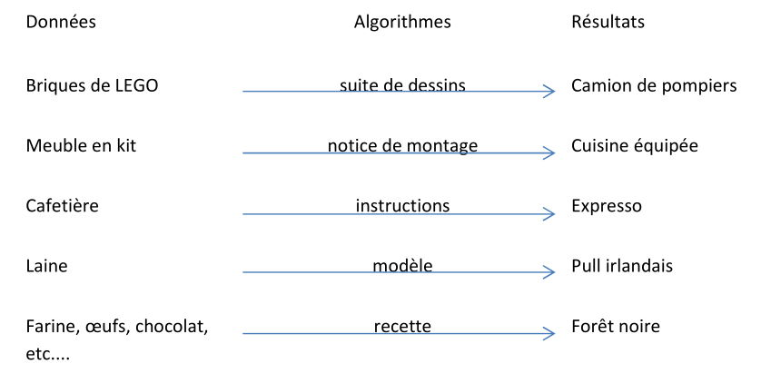
Exemple
Extrait d’un dialogue entre un touriste égaré et un autochtone :
« Pourriez-vous m’indiquer le chemin de la gare, s’il vous plait ? »
« Oui bien sûr : vous allez tout droit jusqu’au prochain carrefour, vous prenez à gauche au carrefour et ensuite la troisième à droite, et vous verrez la gare juste en face de vous. »
« Merci. »
La réponse de l’autochtone est la description d’une suite ordonnée d’instructions : « allez tout droit, prenez à gauche, prenez la troisième à droite ».
Celles-ci manipulent des données : « carrefour, rues »
Et permettent de réaliser la tâche désirée : « aller à la gare. »
Elles sont compréhensibles par des humains.
Critères de qualité
VALIDITE
ROBUSTESSE
REUTILISABILITE
COMPLEXITE
EFFICACITE
MAINTENABILITE
ELEGANCE
Validité
La validité d’un algorithme est son aptitude à réaliser exactement la tâche pour laquelle il a été conçu.
Arrive-t-on effectivement à la gare en exécutant scrupuleusement les instructions dans l’ordre anoncé ?
Robustesse
La robustesse d’un algorithme est son aptitude à se protéger de conditions anormales d’utilisation.
Le chemin proposé a été pensé pour un piéton, alors qu’il est possible que le « touriste égaré » soit en voiture et que la « troisième à droite » soit en sens interdit.
Réutilisabilité
La réutilisabilité d’un algorithme est son aptitude à être réutilisé pour résoudre des tâches équivalentes à celle pour laquelle il a été conçu.
L’algorithme de recherche du chemin de la gare est-il réutilisable tel quel pour se rendre à la mairie?
A priori non, sauf si la mairie est juste à côté de la gare.
Complexité
La complexité d’un algorithme est le nombre d’instructions élémentaires à exécuter pour réaliser la tâche pour laquelle il a été conçu.
Si le « touriste égaré » est un piéton, la complexité de l’algorithme de recherche de chemin peut se compter en nombre de pas pour arriver à la gare.
Efficacité
L’efficacité d’un algorithme est son aptitude à utiliser de manière optimale les ressources du matériel qui l’exécute.
N’existerait-il pas un raccourci piétonnier pour arriver plus vite à la gare ?
Maintenabilité
Capacité d'un algorithme à être mis à jour, amélioré, modifié facilement.
Elegance
- KISS
- Keep It Simple, Stupid.
- DRY
- Don't Repeat Yourself
La perfection est atteinte, non pas lorsqu'il n'y a plus rien à ajouter, mais lorsqu'il n'y a plus rien à retirer.
1.2 PROGRAMMATION
La programmation d’un ordinateur consiste à lui « expliquer » en détail ce qu’il doit faire, en sachant :
- qu’il ne « comprend » pas le langage humain,
- qu’il peut seulement effectuer un traitement automatique sur des séquences de 0 et de 1
Langage de programmation
Un langage de programmation est composé d’un ensemble de mots-clés (choisis arbitrairement),
de règles très précises indiquant comment on peut assembler ces mots pour former des «
phrases » et de procédures de traduction des phrases en séquence de 0 et de 1.
Ils permettent de faire abstraction des mécanismes bas niveaux de la machine.
Ils facilitent la rédaction et la compréhension d’un code source par un humain.
Traduction
La traduction des textes écrits dans un langage de programmation en instructions machines est réalisée soit par des interprètes, soit par des compilateurs.
INTERPRETE
Les interprètes traduisent et exécutent les instructions les unes après les autres.
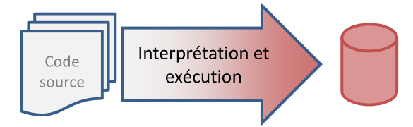
COMPILATEUR
Les compilateurs traduisent toutes les instructions du programme en langage machine et sauvegardent cet état dans un fichier exécutable (dit "binaire"). L'ordinateur exécute le code machine sans utiliser le code source, ce qui permet de gagner du temps à l'exécution.
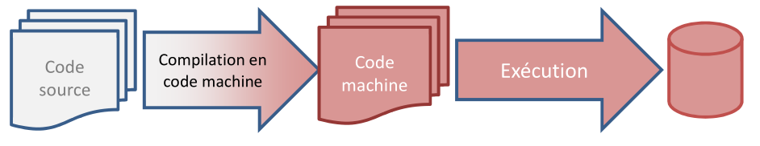
HYBRIDES
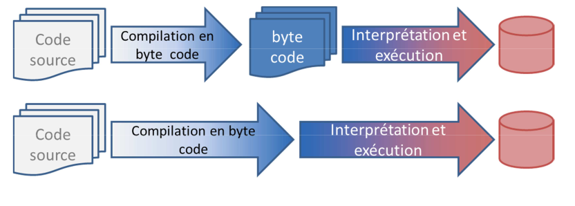
2 MACHINE LOGIQUE
Pour pouvoir apprendre à écrire des programmes, il est nécessaire de connaitre les caractéristiques et les compétences des machines avec lesquelles nous voulons communiquer. De façons à nous concentrer sur la logique des programmes, nous imaginons une machine logique ne reprenant que les éléments nécessaires à notre propos.
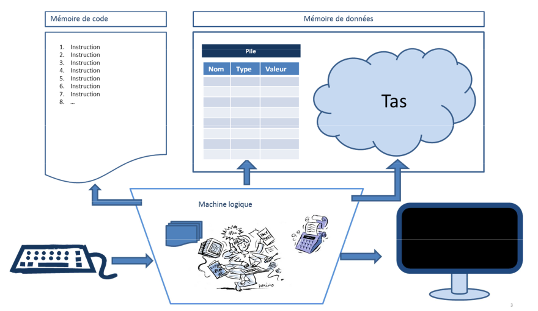
2.1 Début et fin de programme
Syntaxe

Représentation

Déroulement
Au lancement du programme la Machine Logique (ML) :
- Mémorise le nom du programme
- Charge le code dans la mémoire de code
- Recherche une instruction « Debut » suivie du nom du programme à exécuter
- Exécute l’instruction ayant le numéro suivant.
- Arrête le programme quand il exécute l’instruction « Fin » suivie du nom du programme mémorisé
2.2 Opérations et types de données
La manière de réaliser une opération sur des données dépend du type des données. Certaines opérations n'ont aucun sens sur certains types de données.
La technique pour filtrer de l'eau est très différente de la technique pour filtrer les entrées à une soirée
Tandis que filtrer des montagnes n'a pas de sens
Types et machine logique
Il en est de même pour la machine logique. Une opération sur des valeurs ne pourra être exécutée qu'en fonction du type de données de ces valeurs.
Il sera donc nécessaire de définir:
- Les types de données connues par la machine logique
- Les opérations possibles sur chaque type
- Les syntaxes reconnues par la machine pour exprimer ces types
2.3 Type de données numériques
Pour la ML une donnée numérique est équivalente à un nombre réel en algèbre.
Symbole identifiant du type : N
Règles d’écriture : identiques aux règles d’écriture des nombres décimaux en algèbre
12
456,7
0,005
Priorités des opérateurs

3 VARIABLES
3.1 Definitions
Constante littérale
Donnée écrite directement dans le code
Constante symbolique
Nom attribué à une valeur.
La valeur attribuée ne pourra pas être modifiée pendant l’exécution du programme
Variable
La variable associe également un nom à une valeur, mais la valeur pourra être modifiée lors de l’exécution du programme.
La valeur des variables est enregistrée dans la pile.
Assignation
Opération d’attribution d’une valeur à une variable.
3.2 Déclaration
Syntaxe
Bloc de déclaration:

Déclaration de constante

Déclaration de variable

Exemple

Représentation
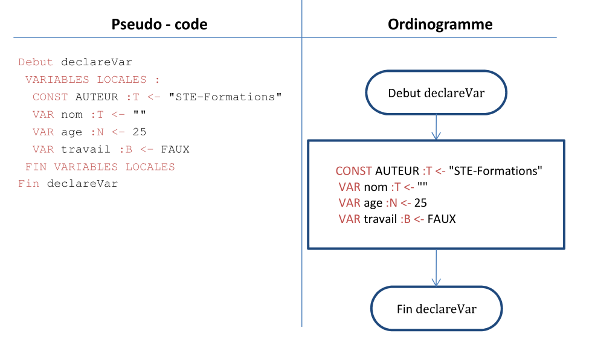
3.3 Instruction d’assignation
Une instruction d’assignation provoque la modification de la valeur d’une variable.
La valeur assignée à une variable doit être de même type que la variable.
Attention : la valeur se trouvant dans la variable avant l’assignation est définitivement perdue à la fin de l’instruction
Syntaxe :
Déroulement
Lors de l’assignation d’une expression dans une variable:
- L’expression est évaluée
- Le résultat de l’évaluation est assignée à la variable
Représentation
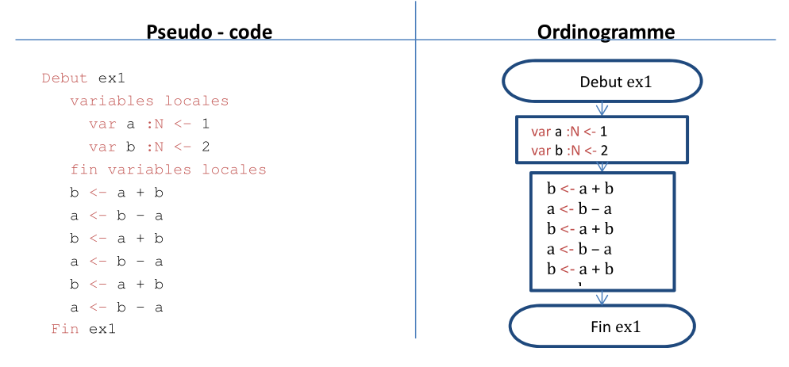
3.4 Evaluation des Expressions
Lorsqu’une instruction contient une expression, la ML commence par évaluer l’expression avant d’effectuer l’instruction
Déroulement
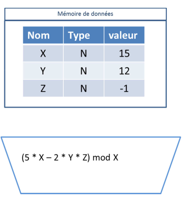
- Chaque variable est remplacée par sa valeur actuelle
- X par 15
- Y par 12
- Z par -1
- X par 15
- Chaque opération est effectuée puis remplacée
- 5 * 15 par 75
- 2 * 12 par 24
- 24 * -1 par -24
- 75 - -24 par 99
- 99 mod 15 par 9
3.5 Table d'évolution
Les tables de valeurs reprennent l’état de la mémoire à la fin de chaque instruction
| Programme | N° ligne | variable a | variable b |
|---|---|---|---|
| . Debut ex1 | 1 | / | / |
| . variables locales | 2 | / | / |
| . var a :N <- 1 | 3 | 1 | / |
| . var b :N <- 2 | 4 | 1 | 2 |
| . fin variables locales | 5 | 1 | 2 |
| . a <- a + b | 6 | 3 | 2 |
| . b <- b + a | 7 | 3 | 5 |
| . a <- b - a | 8 | 2 | 5 |
| . b <- b + a | 9 | 2 | 7 |
| . a <- a + b | 10 | 9 | 7 |
| . a <- a – a | 11 | 0 | 7 |
| . Fin ex1 | 12 | 0 | 7 |
4 AFFICHAGE ET SAISIE
4.1 Afficher
L’instruction « afficher » provoque l’affichage d’une liste de valeur à l’écran.
Syntaxe
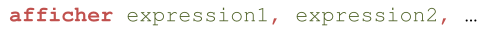
Deroulement
- La ML calcule le résultat de chaque expression et affiche les résultats les uns à la suite des autres.
- Si une expression commence et se termine par le caractère guillemet (") le texte entre les guillemets est affiché tel quel à l’écran.
Représentation
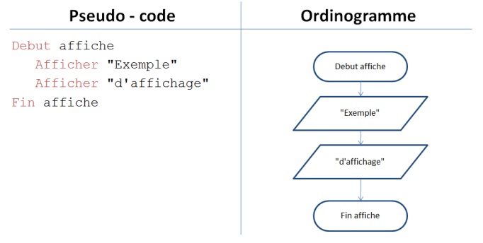
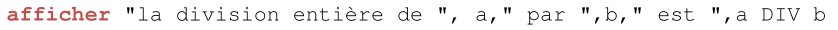
- Affichage de la première valeur « la division entière de »
- Remplacement de a par 7
- Affichage de la deuxième valeur « 7 »
- Affichage de la troisième valeur « par »
- Remplacement de b par 3
- Affichage de la quatrième valeur « 3 »
- Remplacement de a par 7
- Remplacement de b par 3
- Remplacement de « 7 DIV 3 » par 2
- Affichage de la cinquième valeur « 2 »
Si au moment de l'exécution de l'instruction a=7 et b=3, la ligne affichée à l'écran sera: la division entière de 7 par 3 est 2
4.2 Saisir
L'instruction "saisir" provoque : l'interruption de l'exécution du programme dans l'attente d'une valeur communiquée par l'utilisateur et la réception et la mise en mémoire de la valeur reçue
Syntaxe :
Remarques :
- Le type de la valeur saisie est celui de la variable
- La machine logique n'accepte que des valeurs de ce type
- Quand la machine logique reçoit une valeur du bon type, elle modifie la valeur de la variable dans la mémoire de données
Représentation
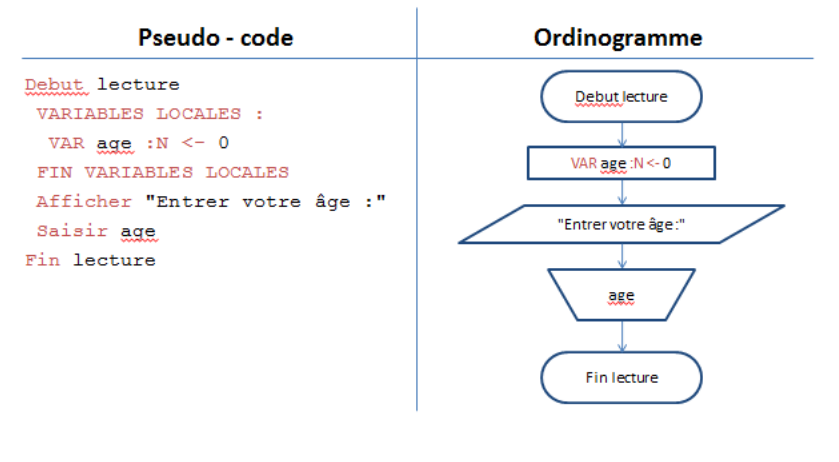
Affichage et la lecture dans une table de valeurs
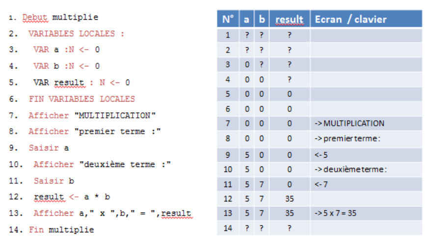
5 TYPE DE DONNÉES BOOLÉENNES
5.1 Valeurs booléennes
Symbole identifiant du type : B
Règles d’écriture : VRAI ou FAUX
5.2 Opérateurs booléens
La négation (NON)
L'opérateur de négation donne un résultat inverse à la valeur de son opérande
Table de valeurs :

La conjonction (ET)
Le résultat d'une conjonction n’est VRAI que si ses deux opérandes sont VRAI
Table de valeurs :

La disjonction (OU)
Le résultat d'une conjonction est VRAI si au moins un de ses deux opérandes est VRAI
Table de valeurs :

Les opérateurs de comparaison
Les opérateurs de comparaison ont comme résultat une valeur booléenne.
Les deux opérandes d'une comparaison doivent être de même type et la comparaison doit être implémentée par le type de données.
Remarque : pour chaque nouveau type, il faudra définir quels opérateurs de comparaison sont définis.
Les comparateurs d'égalité (=) et de différence(≠) sont définis pour :
- les valeurs de type numérique
- les valeurs de type booléen
Les comparateurs d'ordre (<, ≤, >, ≥) sont définis pour :
- les valeurs de type numérique.
Priorité des opérateurs

5.3 Expression booléenne
Une expression booléenne est une expression dont le résultat est une valeur booléenne
Exemple d’évaluation d'une expression booléenne.

5.4 Syntaxe
Déclaration variable booléenne

Constante booléenne

Assignation variable booléenne

Expression booléenne

Opération de comparaison

Opérateur d’égalité

Comparateur d’ordre

5.5 Exemple